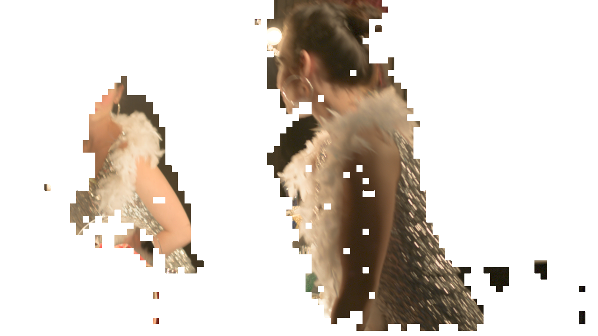

Motion Aware Exposure Bracketing for HDR Video
@ 26th Eurographics Symposium on Rendering (EGSR 2015)
Yulia Gryaditskaya1
Tania Pouli2
Erik Reinhard2
Karol Myszkowski1
Hans-Peter Seidel1
1MPI Informatik
2Technicolor R&D
Our metering algorithm determines the optimal exposure time for every frame as a function of scene motion and its dynamic range. Our algorithm analyses previous frames to determine capture settings for the current frame. In particular, it gathers motion information from the two recent frames to divide the image into regions of local scene motion (local motion regions, or LMRs) and their counterparts, dominant motion regions (DMRs). The separation is performed to ensure that the number of well exposed pixels in DMRs in both frames is sufficient for dominant motion vector estimation. Its estimation precision influences the appearance of overexposed regions after reconstruction. It is also important to ensure that the number of correctly exposed pixels in the LMRs is sufficient for its correct reconstruction. The normalized histograms of each of these areas, as well as that of the full frame are then computed (normalized meaning that the sum of the values in the histogram bins is one). By examining the extreme bins of these three histograms (full, LMR, DMR) we can assess how well we have captured the dynamic range of the full scene and of the motion regions separately, and therefore decide how the next frame should be exposed.
Abstract
Mobile phones and tablets are rapidly gaining significance as omnipresent image and video capture devices. In this context we present an algorithm that allows such devices to capture high dynamic range (HDR) video. The design of the algorithm was informed by a perceptual study that assesses the relative importance of motion and dynamic range. We found that ghosting artefacts are more visually disturbing than a reduction in dynamic range, even if a comparable number of pixels is affected by each. We incorporated these findings into a real-time, adaptive metering algorithm that seamlessly adjusts its settings to take exposures that will lead to minimal visual artefacts after recombination into an HDR sequence. It is uniquely suitable for real-time selection of exposure settings. Finally, we present an off-line HDR reconstruction algorithm that is matched to the adaptive nature of our real-time metering approach.
Downloads
| Paper (6 MB) |
Supplemental (9 MB) |
Video (498 MB) |
Slides (600 MB) |
Citation
|  |
Yulia Gryaditskaya, Tania Pouli, Erik Reinhard, Karol Myszkowski, Hans-Peter Seidel Motion Aware Exposure Bracketing for HDR Video Computer Graphics Forum (Proc. EGSR), 2015 |
@ARTICLE{CGF:Gryad:15,
journal = {Computer Graphics Forum (Proc. EGSR)},
title = {{Motion Aware Exposure Bracketing for HDR Video}},
author = {Gryaditskaya, Yulia and Pouli, Tania and Reinhard, Erik and Myszkowski, Karol and Seidel, Hans-Peter},
year = {2015},
publisher = {The Eurographics Association and John Wiley & Sons Ltd.},
DOI = {10.1111/cgf.12684}
}